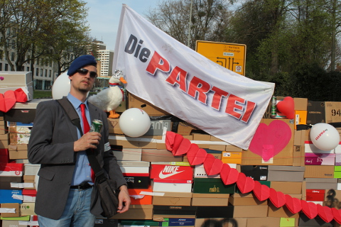
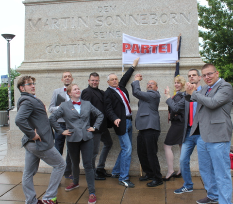
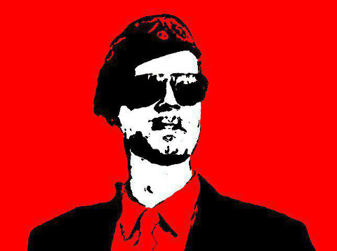

Mein Weg
Das politisch-historische Manifest des Kandidaten Dr. Prachar
Meine spätere Berufung wurde mir schon in die Wiege gelegt und drang zum
ersten Mal im Alter von vier Jahren in mein Bewusstsein, als meine
Tante einmal mit mir an der Leine spazierenging. Ein Mann in Schlips und
Kragen stand am Ufer und steckte drei kleine Kätzchen in einen Sack, um
sie zu ersäufen. Ich fing fürchterlich zu weinen an: „Bitte nicht,
lieber Onkel!“ Meine Tante, die selbst mit den Tränen zu kämpfen hatte,
wischte meine weg und sagte resigniert: „Da kann man nichts machen,
Junge, der ist im Stadtrat.“ In diesem Augenblick beschloss ich,
Politiker und Tierschützer zu werden, um so gegen das Unrecht auf dieser
Welt zu kämpfen.
Aber nicht nur in meinem Engagement für den Tierschutz, auch in meinem Faible für den Mauerbau zeichnete sich mein späterer Weg in die Partei Die PARTEI schon früh ab. Ich war noch im ersten Schuljahr, als ich mir von meinem Taschengeld meine erste Single zulegte, „Another Brick In The Wall“ von Pink Floyd. Während meiner gesamten Schulzeit, an der Grundschule, an der Orientierungsstufe, auf dem Max-Planck-Gymnasium, bis zum Abitur im Jahre 2002 und noch darüber hinaus hörte mir tagtäglich diese Platte auf dem alten Plattenspieler meines Vaters mindestens einmal an. Das war mein erstes politisches Statement, das ich jeden Tag aufs Neue abgab.

Neben der Liebe zu Tieren und Mauern erfasste mich auch schon früh eine unendliche Liebe zu meiner Heimat im Leinetal, zu ihrer unverwechselbaren Landschaft, ihrem Bier, ihren Würsten und auch zu den liebens- und abküssenswerten Menschen, die sie bevölkern. Stets ist meine Heimatstadt der Mittelpunkt meines Lebens gewesen; die meiste Zeit bin ich ihr auch treu geblieben, aber für meinen Wehrdienst im Zentralen Sanitätsdienst der Bundeswehr in Hildesheim und für das Studium der Tiermedizin in Hannover musste ich sie zwischenzeitlich doch verlassen. In dieser Zeit in der Fremde ist meine Heimatliebe nur noch stärker geworden, die externe Perspektive hat meine politische Imagination gewaltig erweitert, eine separatistische Ader und der immer lauter werdende Wunsch nach der Unabhängigkeit Südniedersachsens haben sich in mir entwickelt und ich konnte den Regionalpatriotismus in meine politische Agenda aufnehmen:
Für die Region! Für das Land!
Für die Menschen! FÜR die Tiere!
Die Region fördern und fordern!
So geht Turbopolitik!
Nach dem erfolgreichen Abschluss meines Studiums entschied ich mich, meine Fähigkeiten als Mensch, Tierfreund und nicht zuletzt als Politiker auf die höchsten Level zu heben. Neben dem beruflichen Einstieg als Assistenztierarzt an der Tierklinik der Georg-August-Universität, schrieb ich an meiner Dissertation, erwarb den Doktorgrad und war in der Folge für das Herdenmanagement eines regionalen Milchproduzenten zuständig,. Sicher, ich konnte dort einiges für die regionale Wirtschaft bewirken und habe tiefe Einblicke in agrarpolitische Zusammenhänge gewonnen, so dass ich für meine aktuelle Tätigkeit in der Finanz- und Wirtschaftsberatung für Tierärzte bestens gerüstet bin. Das wichtigste war aber, dass ich dort den letzten Schliff als Politiker erhalten habe. Jede und jeder, die und der ein politisches Mandat anstrebt, von der kommunalen bis hoch zur Bundesebene, sollte zumindest ein kurzes Praktikum im Herdenmanagement absolvieren. Denn dort lernt man, Herden jeglicher Art so zu führen, dass alle Beteiligten glauben, sie hätten die Entscheidungen getroffen und deshalb willig folgen.

Im Jahre 2014 war es dann soweit. Ich fühlte mich in allen Bereichen meiner Persönlichkeit in einem Maße vervollkommnet, dass ich die Mitgliedschaft in einer politischen Partei auf meine Agenda setzen konnte. Wer meinen Werdegang und meine diesbezüglichen Bekundungen von meiner Kindergartenzeit bis zu diesem Punkt aufmerksam verfolgt hat, den kann auch nicht verwundern, dass es am Ende die Partei Die PARTEI, die Partei für Arbeit, Rechtsstaat, Tierschutz, Elitenförderung und basisdemokratische Initiative geworden ist, in deren Dienst ich mich gestellt habe. Schnell zeigte sich, dass ich für Die PARTEI und umgekehrt Die PARTEI für mich maßgeschneidert waren. Man übertrug mir das Amt des Schatzmeisters sowohl im Göttinger Kreis- als auch im Ortsverband, berief mich zum Rechnungsprüfer für den Niedersächsischen Landesverband und stellte mich als Kandidat für die Wahlen zum Ortsrat Nikolausberg, zu Stadtrat und Kreistag sowie als Direktkandidat für den Bundestag und auch den Landtag auf.
Im Augenblick ist der Wahlkreis 53 Göttingen durch den aktuellen direkt gewählt Abgeordneten mehr schlecht als recht vertreten. Mein Wahlspruch für den Bundestagswahlkampf lautet deshalb:
„Inhalte überwinden! Oppermann auch!“
Wählen SIE mich in den Bundestag und setzen SIE mit mir ZUSAMMEN, die Eckpunkte, die IHNEN am Herzen liegen, auf die politische Agenda!
Denn ich kann nicht nur Geburtshilfe bei Küken leisten, sondern auch Hornochsen kastrieren und mich erfolgreich um ideologisch schwer erkrankte Braunbären kümmern.
Oder sorgen Sie durch IHRE Stimme für MICH, für Dr. Christian Prachar, dafür, dass ich Sie die Jahre bis zur nächsten Wahl in Ruhe lasse und keine wirren Statements mehr um die Ohren haue, da ich saturiert in einem Berliner Bundestagsbüro sitze und mir die Eier kraule.
Mit Ihrer Unterstützung gewinnen alle!
Ihre Stimme FÜR Dr. Christian Prachar!
FÜR Südniedersachen!
FÜR Statements und GEGEN Statements!

Hasta la cerveza siempre!